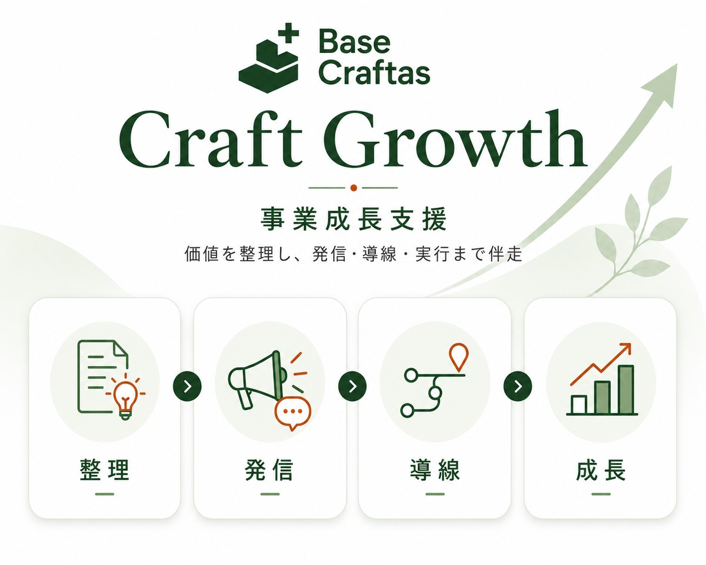
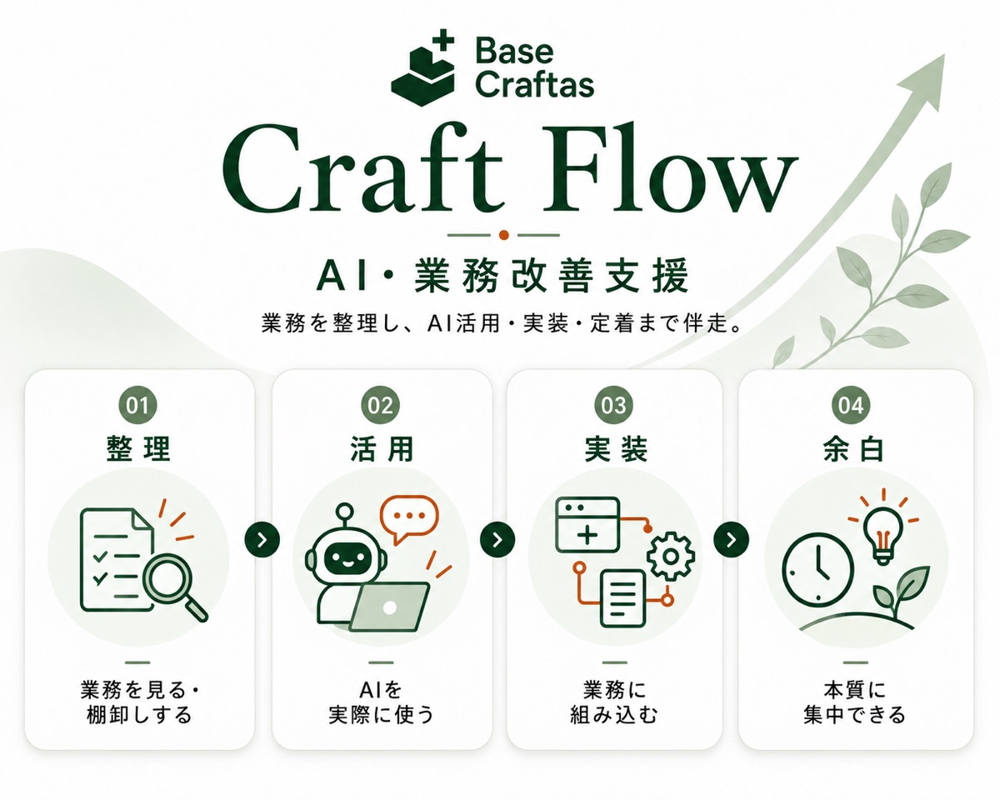
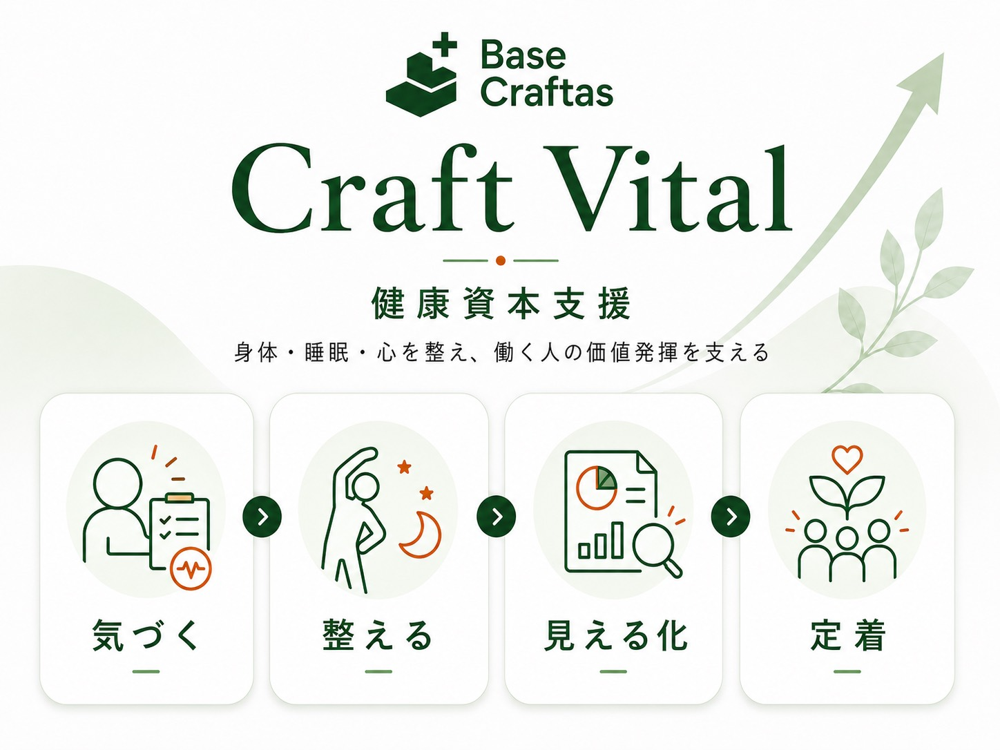
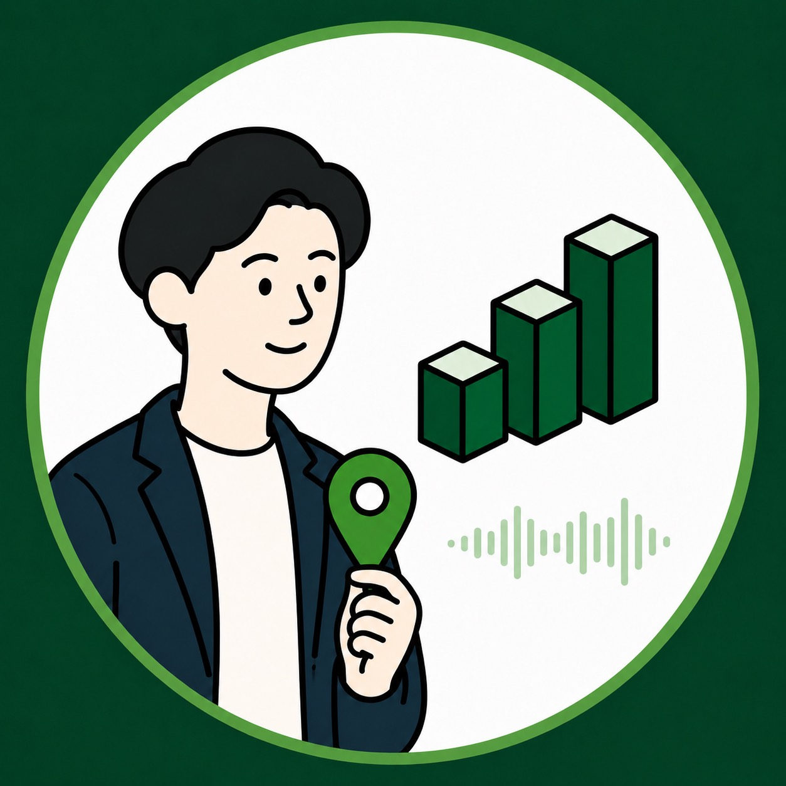

組織を整え、現場の価値を言葉にし、院内スタッフが自ら届けられる状態まで。
医療・介護施設の自走する採用ブランドづくりに伴走します。
Base Craftasは、すでに存在している専門性・経験・想い・技術・地域性・関係性・経営資源に光を当て、それらが必要な人へ届き、継続的に発揮されるための土台を整える事業体です。
医療・健康領域を起点に、事業者・組織・地域の価値発揮を支える。それが私たちの存在意義です。
目的や課題の中心に立ち返り、本当に必要なことを見極める。
採用ブランドを育てる支援、AIで業務に余白をつくる支援、働く人の健康を支える支援。医療・介護の組織に必要な土台を、つながりのある3つの事業で支えます。



医療・健康領域と事業支援の両方に軸足を置いているからこそ、できることがあります。

理学療法士としての臨床経験と、SNS・AI・事業設計の知識を掛け合わせ、医療領域の専門職・事業者の土台づくりを支援しています。
Base Craftasの主要サービスとは別に、学習企画・事業構想・Webアプリなどの実践を紹介しています。
どのサービスが合うかわからない場合も大丈夫です。
「どれが合うか相談したい」も歓迎しています。
まずはお気軽にお問い合わせください。
通常3営業日以内にご連絡いたします。